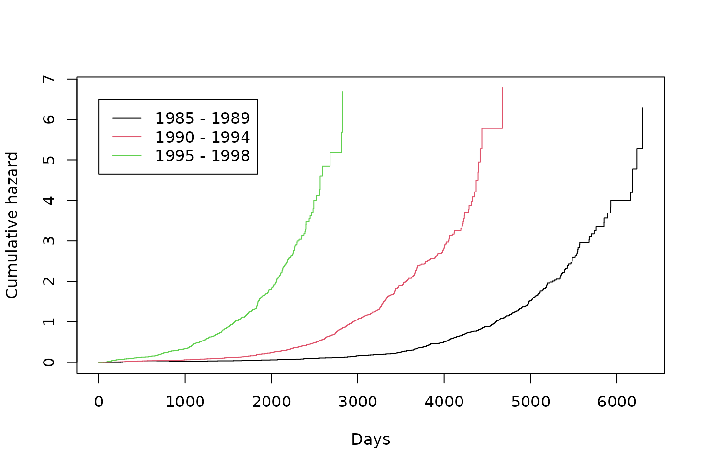

Evaluation-of-estimation-of-IPCWs
Evaluation-of-estimation-of-IPCWs.RmdIntroduction
This vignette explores whether the assumptions of the BLR-IPCW and
psuedo-value methods for assessing calibration are met in the
illustrative example in the Overview
vignette. We use data from the European Society for Blood and Marrow
Transplantation (EBMT 2023), which
contains multistate survival data after a transplant for patients with
blood cancer. The start of follow up is the day of the transplant and
the initial state is alive and in remission. There are three
intermediate events (\(2\): recovery,
\(3\): adverse event, or \(4\): recovery + adverse event), and two
absorbing states (\(5\): relapse and
\(6\): death). This data was originally
made available from the mstate package (Wreede, Fiocco, and Putter 2011).
In the illustrative example in the Overview vignette, we found predominately good agreement between the BLR-IPCW and pseudo-value calibration curves, except when assessing the calibration of the transition probabilities from state \(j = 1\) into state \(k = 3\). Given we do not know the true calibration of these transition probabilities we cannot say for sure which calibration curve is correct. However, we can take steps to test the assumptions made by each of the methods, which may help guide which method of assessing calibration should be used in this particular clinical example. We suggest package users take similar steps to explore which method may be most appropriate in their particular clinical context.
Methods and Results
We start by reminding ourselves of the EBMT (Wreede, Fiocco, and Putter 2011; EBMT 2023)
validation dataset ebmtcal. Please refer to the Overview
vignette for a more detailed description of this data.
BLR-IPCW requires that the outcome, \(I_{k}(t)\), is independent from the
censoring mechanism in the re-weighted population. Psuedo-values require
non-informative censoring within the subgroups within which they are
calculated. A key variable which predicts the censoring mechanism is
year of transplant, year. Individuals who had their
transplant more recently have a shorter administrative censoring time,
given they have a shorter maximum follow up.
When calculating pseudo-values, we can completely remove the impact of this variable by calculating pseudo-values within subgroups defined by this variable. In the Overview vignette we also further grouped patients by their predicted risk in a further three subgroups. We therefore believe the assumption for the pseudo-value approach is likely to hold.
When implementing the BLR-IPCW approach, the most important step is
estimation of the inverse probability of censoring weights (IPCWs). In
calibmsm this is done internally using a cox
proportional hazards model. We fit this model to the
ebmtcal data again here to assess how well it has been
specified.
We start by loading the ebmtcal data.
set.seed(101)
library(calibmsm)
data("ebmtcal")
head(ebmtcal)
#> id rec rec.s ae ae.s recae recae.s rel rel.s srv srv.s year agecl
#> 1 1 22 1 995 0 995 0 995 0 995 0 1995-1998 20-40
#> 2 2 29 1 12 1 29 1 422 1 579 1 1995-1998 20-40
#> 3 3 1264 0 27 1 1264 0 1264 0 1264 0 1995-1998 20-40
#> 4 4 50 1 42 1 50 1 84 1 117 1 1995-1998 20-40
#> 5 5 22 1 1133 0 1133 0 114 1 1133 0 1995-1998 >40
#> 6 6 33 1 27 1 33 1 1427 0 1427 0 1995-1998 20-40
#> proph match dtcens dtcens.s
#> 1 no no gender mismatch 995 1
#> 2 no no gender mismatch 422 0
#> 3 no no gender mismatch 1264 1
#> 4 no gender mismatch 84 0
#> 5 no gender mismatch 114 0
#> 6 no no gender mismatch 1427 1This is followed by fitting a cox model to predict probability of
being censored. This below code chunk is what happens internally in
calib_blr if one sets
w.covs = c("year", "agecl", "proph", "match").
model.ipcw <- survival::coxph(survival::Surv(dtcens, dtcens.s) ~ year + agecl + proph + match, data = ebmtcal)
model.ipcw
#> Call:
#> survival::coxph(formula = survival::Surv(dtcens, dtcens.s) ~
#> year + agecl + proph + match, data = ebmtcal)
#>
#> coef exp(coef) se(coef) z p
#> year1990-1994 1.781086 5.936299 0.093909 18.966 <2e-16
#> year1995-1998 3.796330 44.537437 0.118184 32.122 <2e-16
#> agecl20-40 -0.135434 0.873337 0.064500 -2.100 0.0357
#> agecl>40 -0.084436 0.919031 0.080513 -1.049 0.2943
#> prophyes -0.072379 0.930179 0.069379 -1.043 0.2968
#> matchgender mismatch -0.006291 0.993729 0.064812 -0.097 0.9227
#>
#> Likelihood ratio test=1351 on 6 df, p=< 2.2e-16
#> n= 2279, number of events= 1376The coefficient for year, in particular 1995 - 1998, is
very big. However, we know that year of transplant is likely be to
highly predictive of being censored, so further exploration is needed. A
key assumption made by this model is proportional hazards. We plot the
the cumulative hazard estimate using Kaplan-Meier survival curves
stratified by year of transplant and assess proportionality
visually.
plot(kmfit, fun = "cumhaz", col = c(1,2,3), xlab = "Days", ylab = "Cumulative hazard")
legend(1,6.5,c("1985 - 1989", "1990 - 1994", "1995 - 1998"), col = c(1,2,3), lty = c(1, 1, 1))Figure 1: Cumulative hazard calculated within subgroups defined by year of transplant
Discussion
For the proportional hazards assumption to hold, the Kaplan-Meier survival curves within in each group should be proprtional to eachother over every follow up time. Clearly the proportional hazards assumption does not hold. This means the model for estimating the weights is misspecified and the estimated IPCWs may be wrong. While the variable year of transplant could be removed from the model for estimating the weights to help ensure the proportional hazards assumption is met, we know this variable is highly predictive of being censored, and therefore omitting this key predictor would also result in a misspecified model and incorrect weights.
We would therefore conclude that it is unlikely that the assumptions hold for the BLR-IPCW method, which could be resulting in biased calibration curves in this particular clinical example. If developing this model in practice, we would recommend assessing calibration using the pseudo-value approach. This is not a fundamental problem with the BLR-IPCW approach, but an issue with estimating the IPCWs under the censoring mechanism in this example. If the IPCWs can be estimated correctly, this should result in unbiased calibration curves. As suggested in the Overview vignette, more simulation studies are required to rigorously test the robustness of each method when their assumptions do not hold, and in what scenario each method is most likely to give biased calibration curves.
This vignette has also highlighted the limitations of using a cox
proportional hazards model to estimate the IPCWs. The
calibmsm package has been developed to provide a set of
tools to assess the calibration of multistate models, but is not a
focused package for estimating IPCWs. We urge users to develop better
models for estimating the IPCWs and specify them using the
weights argument. A process for estimating confidence
intervals using bootstrapping when manually estimating the IPCWs is
exemplified in the BLR-IPCW-manual-boostrap
vignette.
One final point, it is peculiar that this issue only causes discordance between the calibration plots out of state \(j = 0\) into state \(k = 3\), whereas for all other states \(k\) there is closer agreement between the BLR-IPCW and pseudo-value calibration curves (see Figures 2 and 3 in the Overview vignette). We hypothesise that this may be due to the fact no individuals move into state \(3\) after \(100\) days. We believe this is due to the definition of an adverse event needing to happen within \(100\) days post transplant, but cannot be sure as the authors of this package had no involvement in data collection. It is possible that the application of incorrectly estimated weights, in combination with predicted risks of the outcome state which behaves differently to all others, is the reason behind this behaviour. However, further exploration of this is beyond the scope of this vignette.